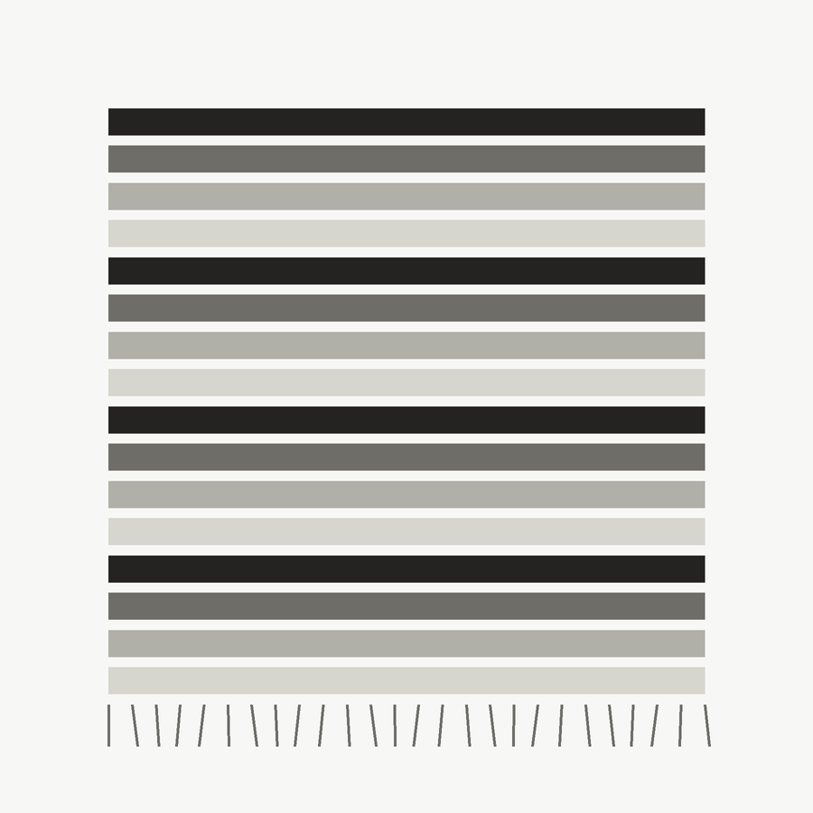
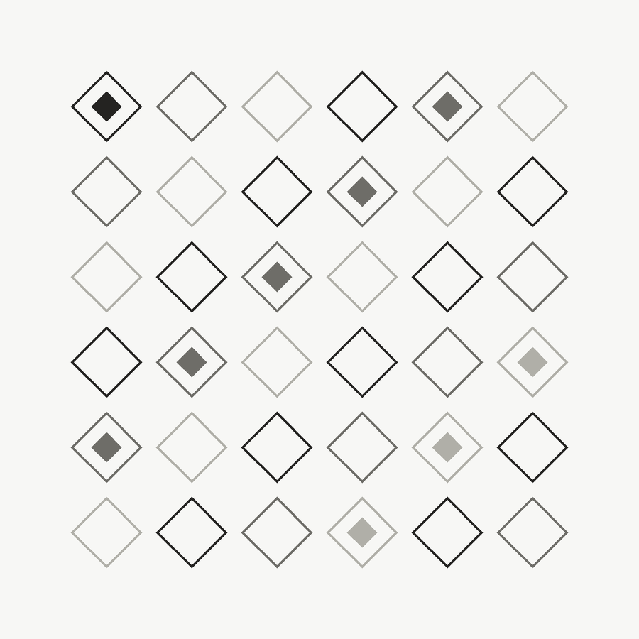
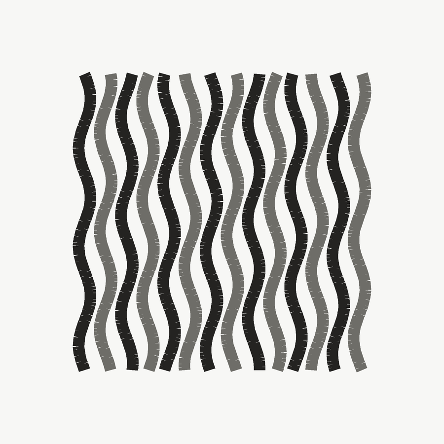

Poncho Pampa
$48.000
Tejido en telar con lana de oveja, en franjas de tonos crudos y fleco natural.
Ver ficha del artículoArtículos / Tejidos
Piezas en lana, tejidas en telar o a punto, en tonos crudos y naturales.

$48.000
Tejido en telar con lana de oveja, en franjas de tonos crudos y fleco natural.
Ver ficha del artículo
$52.000
Manta de punto grueso con rombos entrelazados, en lana merino y algodón.
Ver ficha del artículo
$19.500
Bufanda de punto con canalé ancho, tejida en una sola pieza sin costuras.
Ver ficha del artículo